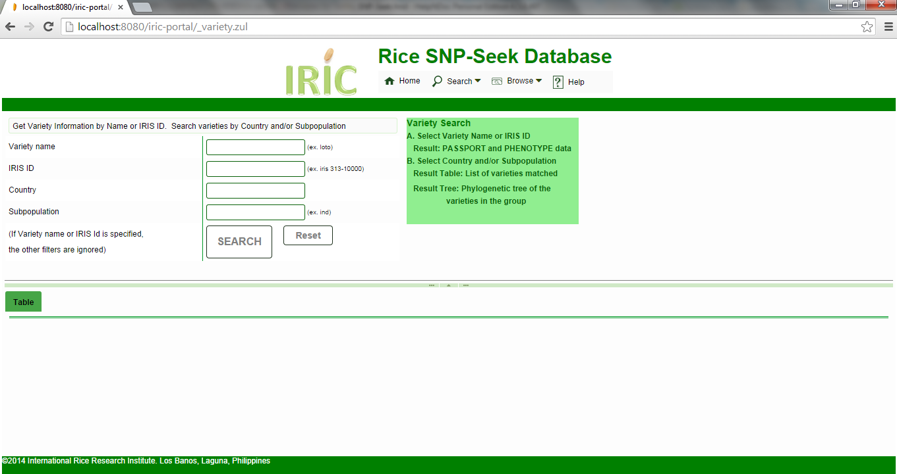
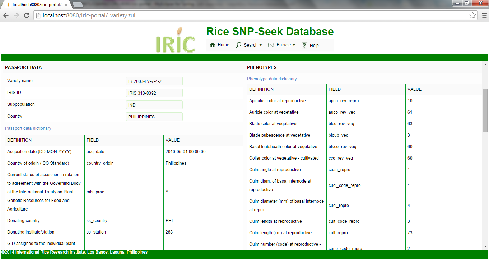
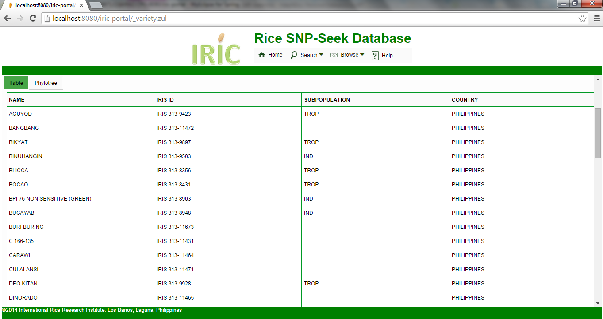
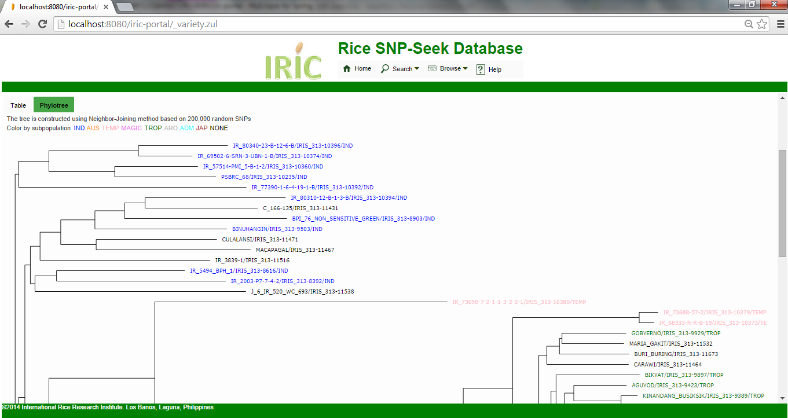

The Variety Query interface returns the list of varieties from specified country of origin and/or is a member a subpopulation. It can also retrieve passport and phenotypic data for a given Variety or IRIS ID.
Type in the Varity name or IRIS ID at their corresponding boxes, which have auto-completion features. Only one of either should be specified otherwise an error message is displayed. The results are Passport data listed at the left panel and Phenotypes with values at the right. The meaning of the values are explained in the Passport data dictionary and Phenotype data dictionary.

Type in the country and/or the subpopulation at their corresponding auto-complete boxes. If both are specified, the resulting set of varieties satisfy both constraints. The examples below query for varieties from the Philippines.
The resulting set of varieties can be viewed as a table, or in a phylogenetic tree.
Table - This lists the varieties satisfying the constraints sorted by name. Selecting a variety from this list will display its Variety passport and phenotype data.

Phylotree - The phylogenetic tree of the result is dynamically computed based on SNP values from 200,000 random positions between the varieties. The varieties are colored based on their subpopulation, and clicking the node displays the Variety passport and phenotype data.
